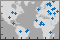

geoscatter
Scatter chart in geographic coordinates
- 
Syntax
Description
Vector Data
geoscatter(
creates a scatter plot with markers in geographic coordinates. By default, the
function uses circular markers. Specify the latitude coordinates in degrees
using lat,lon)lat, and specify the longitude coordinates in degrees
using lon. If the current axes is not a geographic or map
axes, or if there is no current axes, then the function creates the scatter plot
in a new geographic axes.
geoscatter(___,
fills in the circles. You can use the "filled")"filled" option with
any of the input argument combinations in the previous syntaxes.
Table Data
geoscatter(
plots the variables tbl,latvar,lonvar)latvar and lonvar from
the table tbl. To plot one data set, specify one variable for
latvar and one variable for lonvar. To
plot multiple data sets, specify multiple variables for
latvar, lonvar, or both. If both
arguments specify multiple variables, they must specify the same number of
variables. (Since R2022b)
Additional Options
geoscatter( plots
into the geographic axes or map axes specified by ax,___)ax.
Specify the axes as the first argument in any of the previous syntaxes.
geoscatter(___,
specifies properties of the scatter plot using one or more name-value arguments.
For a list of properties, see Scatter Properties.Name,Value)
s = geoscatter(___)Scatter object. Use s to set
properties after creating the plot. For a full list of properties, see Scatter Properties.
Examples
Specify the latitude and longitude coordinates of several locations in Boston. Create a scatter plot using filled markers.
lat = [42.3501 42.3598 42.3626 42.3668 42.3557];
lon = [-71.0870 -71.0662 -71.0789 -71.0801 -71.0662];
geoscatter(lat,lon,"filled")Zoom out of the plot by adjusting the limits.
geolimits([42.3456 42.3694],[-71.0930 -71.0536])

Create a scatter plot using the latitude and longitude coordinates of several points along the Mississippi River. Specify the optional size and color arguments as vectors. The color values map to colors in the colormap.
lat = [32.30 33.92 35.17 36.98 37.69 38.34];
lon = [-91.05 -91.18 -90.09 -89.11 -89.52 -90.37];
A = 100*[5 12 15 3 10 3];
C = [1 2 2 3 1 1];
geoscatter(lat,lon,A,C,"filled")Zoom out by adjusting the latitude and longitude limits of the plot. Then, change the basemap to a terrain basemap.
geolimits([31.60 38.91],[-97.04 -82.84])
geobasemap grayterrain
Specify the latitude and longitude coordinates of several European cities. Create a scatter plot using magenta diamond markers.
lat = [48.85 51.5 40.41 41.9 52.52 52.36 52.22 47.49 44.42 50.07 48.20 46.94]; lon = [2.35 -0.12 -3.70 12.49 13.40 4.90 21.01 19.04 26.10 14.43 16.37 7.44]; geoscatter(lat,lon,"m","d")
Zoom out by adjusting the latitude and longitude limits of the plot. Then, change the basemap to a topographic basemap.
geolimits([30 60],[-20 50])
geobasemap topographic
Specify the latitude and longitude coordinates of several locations in Boston.
lat = [42.3501 42.3598 42.3626 42.3668 42.3557]; lon = [-71.0870 -71.0662 -71.0789 -71.0801 -71.0662];
Create a scatter plot and set the marker edge color, marker face color, and line width.
geoscatter(lat,lon,70,"MarkerEdgeColor",[0.9290 0.6940 0.1250], ... "MarkerFaceColor",[0.3010 0.7450 0.9330],"LineWidth",2)
Zoom out of the plot by adjusting the limits. Then, change the basemap.
geolimits([42.3456 42.3694],[-71.0930 -71.0536])
geobasemap streets-dark
Since R2022b
A convenient way to plot data from a table is to pass the table to the geoscatter function and specify the variables to plot.
Load a file containing county data into the workspace as a table. The table includes latitude and longitude coordinates in the table variables Latitude and Longitude, respectively.
tbl = readtable("counties.xlsx"); Plot the latitude and longitude coordinates over a two-tone basemap. Return the Scatter object as s.
s = geoscatter(tbl,"Latitude","Longitude"); geobasemap grayland
Change the marker style and color of the plot by setting the Marker and MarkerEdgeColor properties.
s.Marker = "*"; s.MarkerEdgeColor = "m";

Since R2022b
One way to plot data from a table and customize the colors and marker sizes is to set the ColorVariable and SizeData properties. You can set these properties as name-value arguments when you call the geoscatter function, or you can set them on the Scatter object later.
For example, load a file containing county data into the workspace as a table. The table includes latitude and longitude coordinates in the table variables Latitude and Longitude, respectively.
tbl = readtable("counties.xlsx");Plot the latitude and longitude coordinates using filled markers. Return the Scatter object as s.
s = geoscatter(tbl,"Latitude","Longitude","filled");

Change the marker sizes to 100 points by setting the SizeData property.
s.SizeData = 100;
Vary the marker colors by setting the ColorVariable property to a table variable. Then, add a colorbar.
s.ColorVariable = "Population2010"; c = colorbar; c.Label.String = "County Population in 2010";

Input Arguments
Latitude coordinates in degrees, specified as a vector with elements in
the range [–90, 90]. The vector can contain NaN
values.
The sizes of lat and lon must
match.
Example: [43.0327 38.8921 44.0435]
Data Types: single | double
Longitude coordinates in degrees, specified as a vector. The vector can
contain NaN values.
The sizes of lat and lon must
match.
Example: [-107.5556 -77.0269 -72.5565]
Data Types: single | double
Marker size with units in points squared, specified as a numeric scalar,
numeric vector, or empty array ([]). The size controls
the area of each marker.
Numeric scalar — Use a uniform marker size. For example,
A = 100creates all markers with an area of 100 points squared.Numeric vector — Use a different marker size for each data point. The size of
Amust match the size oflatandlon.Empty brackets (
[]) — Use the default marker size of36points squared. Use this option when you want to specify the color input argument and use the default marker area, such asgeoscatter(lat,lon,[],c).
The SizeData property of
the scatter object stores the marker sizes.
Example: 50
Example: [36 25 25 17 46]
Marker color, specified as one of these options:
RGB triplet or color name — Plot all markers with the same color.
Three-column matrix of RGB triplets — Use different colors for each marker. Each row of the matrix specifies an RGB triplet color for the corresponding marker. The number of rows must equal the length of
latandlon.Vector — Use different colors for each marker and linearly map values in
Cto the current colormap. The length ofCmust equal the length oflatandlon. To change the colormap for the axes, use thecolormapfunction.
An RGB triplet is a three-element row vector whose elements specify the
intensities of the red, green, and blue components of the color. The
intensities must be in the range [0,1]; for example,
[0.4 0.6 0.7]. Alternatively, you can specify some
common colors by name. This table lists the long and short color name
options and the equivalent RGB triplet values.
| Color Name | Short Name | RGB Triplet | Appearance |
|---|---|---|---|
"red" | "r" | [1 0 0] |
|
"green" | "g" | [0 1 0] |
|
"blue" | "b" | [0 0 1] |
|
"cyan"
| "c" | [0 1 1] |
|
"magenta" | "m" | [1 0 1] |
|
"yellow" | "y" | [1 1 0] |
|
"black" | "k" | [0 0 0] |
|
"white" | "w" | [1 1 1] |
|
When you specify marker colors, the geoscatter
function sets the MarkerFaceColor property of the
Scatter object to "flat" and stores
the marker colors in the CData property.
Example: "green"
Example: "g"
Example: [0 1 0]
Marker symbol, specified as one of these values.
| Marker | Description | Resulting Marker |
|---|---|---|
"o" | Circle |
|
"+" | Plus sign |
|
"*" | Asterisk |
|
"." | Point |
|
"x" | Cross |
|
"_" | Horizontal line |
|
"|" | Vertical line |
|
"square" | Square |
|
"diamond" | Diamond |
|
"^" | Upward-pointing triangle |
|
"v" | Downward-pointing triangle |
|
">" | Right-pointing triangle |
|
"<" | Left-pointing triangle |
|
"pentagram" | Pentagram |
|
"hexagram" | Hexagram |
|
Option to fill the interior of the markers, specified as
"filled". Use this option with markers that have a
face, for example, "o" or "square".
This option does not display markers that do not have a face and contain
only edges, such as "+" and
"*".
The "filled" option sets the
MarkerFaceColor property of the
Scatter object to "flat" and the
MarkerEdgeColor property to
"none". As a result, this option displays the marker
faces and does not display the edges.
Source table containing the data to plot, specified as a table or a timetable.
Table variables containing the latitude coordinates, specified using one of the indexing schemes from the table.
| Indexing Scheme | Examples |
|---|---|
Variable names:
|
|
Variable index:
|
|
Variable type:
|
|
Regardless of the variable name, the axis label on the plot is always
Latitude.
The variables you specify must contain numeric data of type
single or double. The data must be
in the range [–90, 90].
If latvar and lonvar both specify
multiple variables, the number of variables must be the same.
Example: geoscatter(tbl,["lat1","lat2"],"lon") specifies
the table variables named lat1 and
lat2 for the latitude coordinates.
Example: geoscatter(tbl,2,"lon") specifies the second
variable for the latitude coordinates.
Example: geoscatter(tbl,vartype("numeric"),"lon")
specifies all numeric variables for the latitude coordinates.
Table variables containing the longitude coordinates, specified using one of the indexing schemes from the table.
| Indexing Scheme | Examples |
|---|---|
Variable names:
|
|
Variable index:
|
|
Variable type:
|
|
Regardless of the variable name, the axis label on the plot is always
Longitude.
The variables you specify must contain numeric data of type
single or double.
If latvar and lonvar both specify
multiple variables, the number of variables must be the same.
Example: geoscatter(tbl,"lat",["lon1","lon2"]) specifies
the table variables named lon1 and
lon2 for the longitude coordinates.
Example: geoscatter(tbl,"lat",2) specifies the second
variable for the longitude coordinates.
Example: geoscatter(tbl,"lat",vartype("numeric"))
specifies all numeric variables for the longitude
coordinates.
Target axes, specified as a GeographicAxes
object1
or MapAxes (Mapping Toolbox™) object.
If you do not specify this argument, then the
geoscatter function plots into the current axes,
provided that the current axes is a geographic axes or map axes
object.
Name-Value Arguments
Specify optional pairs of arguments as
Name1=Value1,...,NameN=ValueN, where Name is
the argument name and Value is the corresponding value.
Name-value arguments must appear after other arguments, but the order of the
pairs does not matter.
Example: geoscatter(lat,lon,"filled",MarkerFaceAlpha=0.5)
creates filled, semi-transparent markers.
Before R2021a, use commas to separate each name and value, and enclose
Name in quotes.
Example: geoscatter(lat,lon,"filled","MarkerFaceAlpha",0.5)
creates filled, semi-transparent markers.
The scatter object properties listed here are only a subset. For a complete list, see Scatter Properties.
Marker outline color, specified "flat", an RGB triplet, a hexadecimal color
code, a color name, or a short name. The default value of "flat" uses
colors from the CData property.
For a custom color, specify an RGB triplet or a hexadecimal color code.
An RGB triplet is a three-element row vector whose elements specify the intensities of the red, green, and blue components of the color. The intensities must be in the range
[0,1], for example,[0.4 0.6 0.7].A hexadecimal color code is a string scalar or character vector that starts with a hash symbol (
#) followed by three or six hexadecimal digits, which can range from0toF. The values are not case sensitive. Therefore, the color codes"#FF8800","#ff8800","#F80", and"#f80"are equivalent.
Alternatively, you can specify some common colors by name. This table lists the named color options, the equivalent RGB triplets, and the hexadecimal color codes.
| Color Name | Short Name | RGB Triplet | Hexadecimal Color Code | Appearance |
|---|---|---|---|---|
"red" | "r" | [1 0 0] | "#FF0000" |
|
"green" | "g" | [0 1 0] | "#00FF00" |
|
"blue" | "b" | [0 0 1] | "#0000FF" |
|
"cyan"
| "c" | [0 1 1] | "#00FFFF" |
|
"magenta" | "m" | [1 0 1] | "#FF00FF" |
|
"yellow" | "y" | [1 1 0] | "#FFFF00" |
|
"black" | "k" | [0 0 0] | "#000000" |
|
"white" | "w" | [1 1 1] | "#FFFFFF" |
|
"none" | Not applicable | Not applicable | Not applicable | No color |
This table lists the default color palettes for plots in the light and dark themes.
| Palette | Palette Colors |
|---|---|
Before R2025a: Most plots use these colors by default. |
|
|
|
You can get the RGB triplets and hexadecimal color codes for these palettes using the orderedcolors and rgb2hex functions. For example, get the RGB triplets for the "gem" palette and convert them to hexadecimal color codes.
RGB = orderedcolors("gem");
H = rgb2hex(RGB);Before R2023b: Get the RGB triplets using RGB =
get(groot,"FactoryAxesColorOrder").
Before R2024a: Get the hexadecimal color codes using H =
compose("#%02X%02X%02X",round(RGB*255)).
Example: [0.5 0.5 0.5]
Example: "blue"
Example: "#D2F9A7"
Marker fill color, specified as "flat", "auto", an RGB
triplet, a hexadecimal color code, a color name, or a short name. The
"flat" option uses the CData values. The
"auto" option uses the same color as the
Color property for the axes.
For a custom color, specify an RGB triplet or a hexadecimal color code.
An RGB triplet is a three-element row vector whose elements specify the intensities of the red, green, and blue components of the color. The intensities must be in the range
[0,1], for example,[0.4 0.6 0.7].A hexadecimal color code is a string scalar or character vector that starts with a hash symbol (
#) followed by three or six hexadecimal digits, which can range from0toF. The values are not case sensitive. Therefore, the color codes"#FF8800","#ff8800","#F80", and"#f80"are equivalent.
Alternatively, you can specify some common colors by name. This table lists the named color options, the equivalent RGB triplets, and the hexadecimal color codes.
| Color Name | Short Name | RGB Triplet | Hexadecimal Color Code | Appearance |
|---|---|---|---|---|
"red" | "r" | [1 0 0] | "#FF0000" |
|
"green" | "g" | [0 1 0] | "#00FF00" |
|
"blue" | "b" | [0 0 1] | "#0000FF" |
|
"cyan"
| "c" | [0 1 1] | "#00FFFF" |
|
"magenta" | "m" | [1 0 1] | "#FF00FF" |
|
"yellow" | "y" | [1 1 0] | "#FFFF00" |
|
"black" | "k" | [0 0 0] | "#000000" |
|
"white" | "w" | [1 1 1] | "#FFFFFF" |
|
"none" | Not applicable | Not applicable | Not applicable | No color |
This table lists the default color palettes for plots in the light and dark themes.
| Palette | Palette Colors |
|---|---|
Before R2025a: Most plots use these colors by default. |
|
|
|
You can get the RGB triplets and hexadecimal color codes for these palettes using the orderedcolors and rgb2hex functions. For example, get the RGB triplets for the "gem" palette and convert them to hexadecimal color codes.
RGB = orderedcolors("gem");
H = rgb2hex(RGB);Before R2023b: Get the RGB triplets using RGB =
get(groot,"FactoryAxesColorOrder").
Before R2024a: Get the hexadecimal color codes using H =
compose("#%02X%02X%02X",round(RGB*255)).
Example: [0.3 0.2 0.1]
Example: "green"
Example: "#D2F9A7"
Width of marker edge, specified as a positive value in point units.
Example: 0.75
Table variable containing the color data, specified as a variable index into the source table.
Specifying the Table Index
Use any of the following indexing schemes to specify the desired variable.
| Indexing Scheme | Examples |
|---|---|
Variable name:
|
|
Variable index:
|
|
Variable type:
|
|
Specifying Color Data
Specifying the ColorVariable property controls the colors of the markers.
The data in the variable controls the marker fill color when the
MarkerFaceColor property is set to
"flat". The data can also control the marker outline color,
when the MarkerEdgeColor is set to
"flat".
The table variable you specify can contain values of any numeric type. The values can be in either of the following forms:
A column of numbers that linearly map into the current colormap.
A three-column array of RGB triplets. RGB triplets are three-element vectors whose values specify the intensities of the red, green, and blue components of specific colors. The intensities must be in the range
[0,1]. For example,[0.5 0.7 1]specifies a shade of light blue.
When you set the ColorVariable property, MATLAB® updates the CData property.
Output Arguments
Tips
When you plot on geographic axes, the
geoscatterfunction assumes that coordinates are referenced to the WGS84 coordinate reference system. If you plot using coordinates that are referenced to a different coordinate reference system, then the coordinates might appear misaligned.
Version History
Introduced in R2018bSee Also
Functions
geoplot|geobubble|scatter|geobasemap
Properties
- Scatter Properties | GeographicAxes Properties | MapAxes Properties (Mapping Toolbox)
1 Alignment of boundaries and region labels are a presentation of the feature provided by the data vendors and do not imply endorsement by MathWorks®.